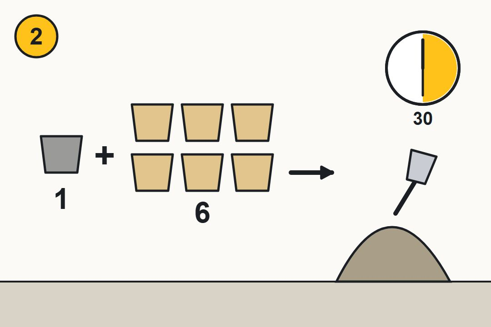
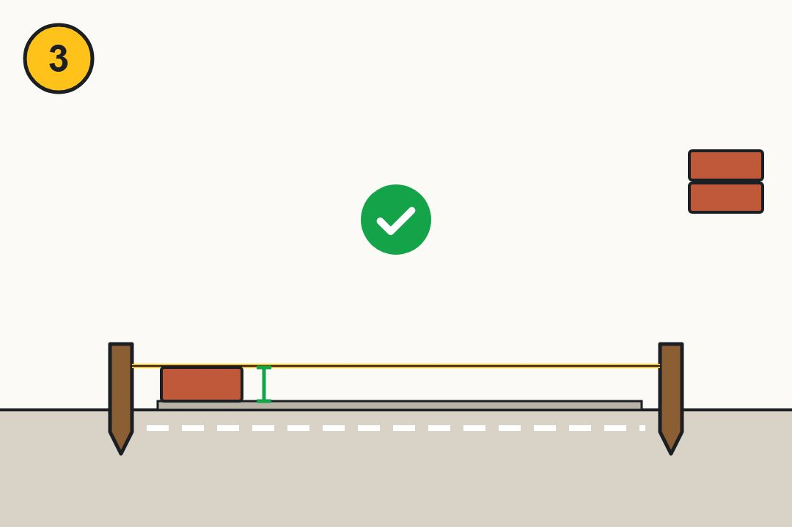
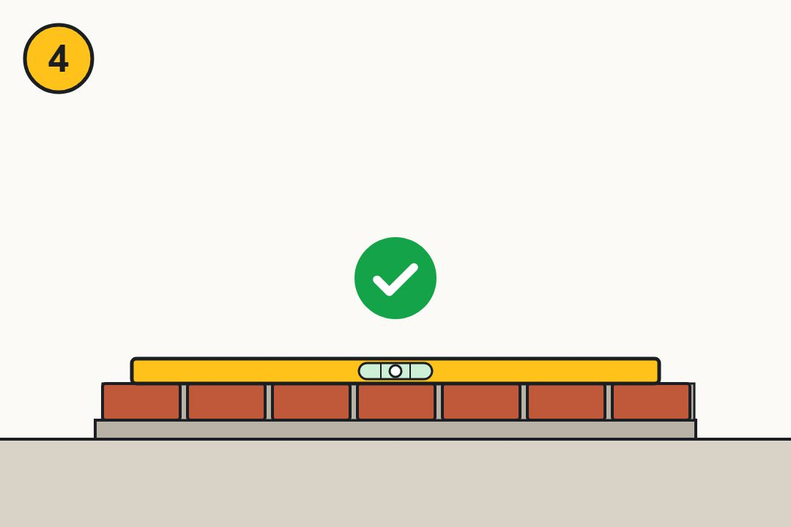
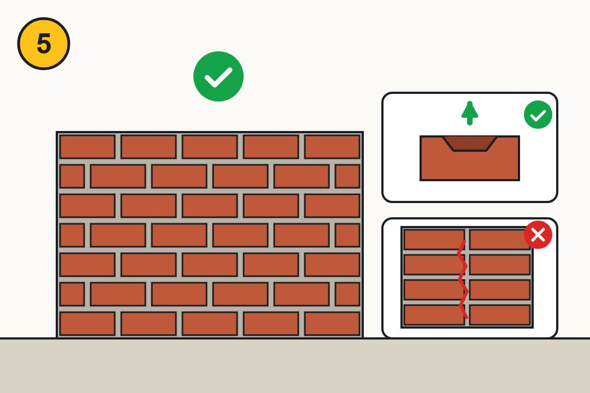
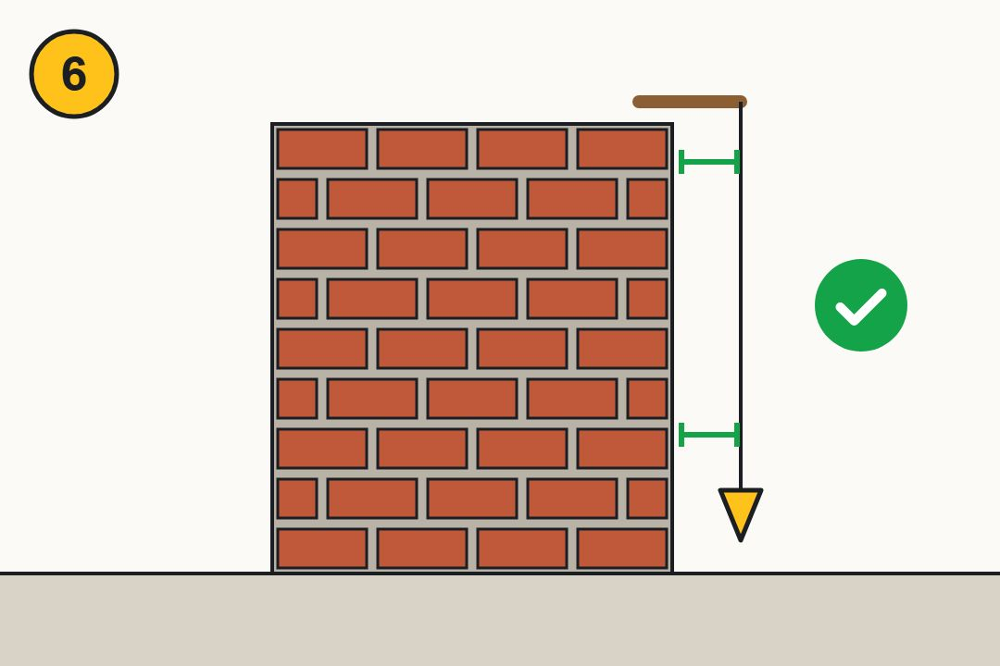
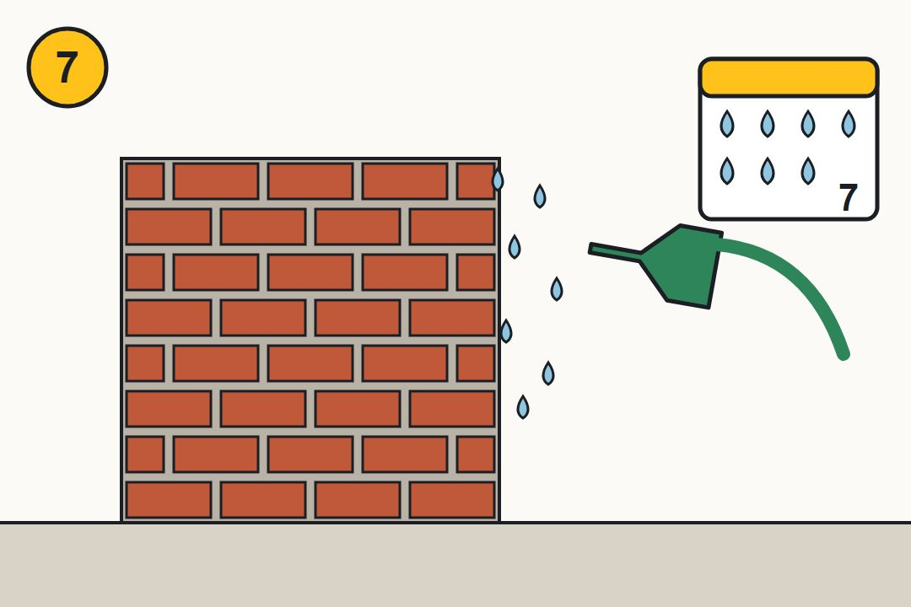

Content review · SS-MAS-01 · Brick Masonry – Basic Procedure
Draft for expert review. Text was drafted with an AI assistant and edited by the developer. Pictures are simple drawings without words (real site photos may replace them). Please mark anything unsafe, wrong or different from local practice. Workers will read this in Marathi, Hindi or English, with audio. Any change you make will be applied to all three languages.
| Field | Text |
|---|---|
| Description | How to build a straight, strong brick wall. Follow these steps every time you lay bricks. |
| Objective | Lay a straight, level brick wall with full, even joints. |
| Materials and tools | Bricks · Cement and sand (mortar) · Water and a tub · Trowel · Plumb bob · Spirit level · String line and pegs · Measuring box · Head pan |
| Duration | 5 min |
Steps (one per screen)

1. Soak the bricks in clean water until no more air bubbles come out. Wet bricks do not suck water out of the mortar.
OK
Change
Change

2. Mix mortar in the ratio your engineer gives, for example 1 cement to 6 sand. Measure with a box, and use the mortar within 30 minutes.
OK
Change
Change

3. Mark the wall line. Fix a peg at each end and tie a tight string line at the height of the first brick.
OK
Change
Change

4. Spread a full bed of mortar and lay the first row along the string. Check the row with the spirit level.
OK
Change
Change

5. Lay each brick with the frog facing up and fill every joint fully, about 10 mm thick. Never put one vertical joint above another.
OK
Change
Change

6. Every few rows, check the wall with the plumb bob and the spirit level. Correct a brick at once, while the mortar is soft.
OK
Change
Change

7. Clean the joints at the end of the day. Keep the wall wet for 7 days (curing).
OK
Change
Change
Safety and common mistakes
Safety precautions
- Wear a helmet, gloves and safety shoes.
- Do not throw bricks up to another person. Pass them by hand or in a head pan.
- Work from strong scaffolding, never from a stack of bricks.
- Wet cement hurts skin and eyes. Wash with clean water at once.
- Keep broken bricks and waste away from where you stand.
Common mistakes
- Using dry bricks
- Thick or half-empty joints
- Vertical joints in one line
- Not checking plumb and level
- Mixing mortar by eye, or using old mortar
- Building too high in one day
- Stopping curing early
Quiz (correct answer in green)
| # | Question and options | Explanation shown to worker | OK? |
|---|---|---|---|
| 1 | Why do we soak bricks in water before laying them? A To make them heavier · B So they do not suck water from the mortar · C To clean their colour · D To make them cool | Dry bricks pull water out of the mortar. The mortar becomes weak and does not stick well. | |
| 2 | How thick should a brick joint be? A About 10 mm · B About 25 mm · C No mortar is needed · D As thick as a brick | Joints of about 10 mm are strong and even. Thick joints shrink and crack. | |
| 3 | Which tool checks that a wall is straight up (vertical)? A Trowel · B Head pan · C Measuring box · D Plumb bob | A plumb bob hangs straight down, so you can see if the wall leans. | |
| 4 | What happens if one vertical joint is directly above another? A Nothing happens · B The wall looks better · C The wall becomes weak and can crack along that line · D It saves mortar | When joints are staggered, each brick spreads the load to two bricks below. Joints in one line make a weak line that can crack. | |
| 5 | How long should a new brick wall be kept wet (curing)? A About 7 days · B 1 hour · C 1 day · D It is not needed | Water lets the cement in the mortar gain strength. Keep the wall wet for about 7 days. |
Values to confirm
| Value or rule | OK / change to |
|---|---|
| Soak until no more air bubbles come out | |
| Example mortar ratio 1 : 6 (cement : sand) | |
| Use mortar within 30 minutes of mixing | |
| Joint thickness about 10 mm | |
| Frog facing up | |
| Curing 7 days | |
| Maximum height of brickwork in one day (for "Building too high in one day") |
Other comments
Sign-off
| Decision | Approved Approved with the changes above Not approved |
| Reviewer name | |
| Qualification / role | |
| Date and signature | |
| May we show "Reviewed by: name, qualification" in the app? | Yes No |